# 前端基础篇之 CSS 世界（转载）
# 前言
本人平时学习及收集内容，欢迎参入一起讨论。
# 内容
# 一、基本概念
# 1.1 流
“流”又叫文档流，是 css 的一种基本定位和布局机制。 流是 html 的一种抽象概念，暗喻这种排列布局方式好像水流一样自然自动。“流体布局”是 html 默认的布局机制，如你写的 html 不用 css，默认自上而下（块级元素如div）从左到右（内联元素如span）堆砌的布局方式。
# 1.2 块级元素和内联元素
块级元素是指单独撑满一行的元素，如 div、ul、li、table、p、h1 等元素。这些元素的 display 值默认是 block、table、list-item 等。
内联元素又叫行内元素，指只占据它对应标签的边框所包含的空间的元素，这些元素如果父元素宽度足够则并排在一行显示的，如 span、a、em、i、img、td 等。这些元素的 display 值默认是 inline、inline-block、inline-table、table-cell 等。
实际开发中，我们经常把 display 计算值为 inline inline-block inline-table table-cell 的元素叫做内联元素，而把 display 计算值为 block 的元素叫做块级元素。
# 1.3 width: auto 和 height: auto
width、height的默认值都是auto。
对于块级元素，流体布局之下width:auto自适应撑满父元素宽度。这里的撑满并不同width:100%的固定宽度，而是像水一样能够根据margin不同而自适应父元素的宽度。
对于内联元素，width:auto则呈现出包裹性，即由子元素的宽度决定。
无论内联元素还是块级元素，height:auto都是呈现包裹性，即高度由子级元素撑开。
注意父元素height: auto会导致子元素height: 100%百分比失效。
css 的属性非常有意思，正常流下，如果块级元素的width是个固定值，margin是auto，则 margin会撑满剩下的空间；如果margin是固定值，width 是 auto，则 width 会撑满剩下的空间。这就是流体布局的根本所在。
# 1.4 外在盒子和内在盒子
外在盒子是决定元素排列方式的盒子，即决定盒子具有块级特性还是内联特性的盒子。外在盒子负责结构布局。
内在盒子是决定元素内部一些忏悔是否生效的盒子。内在盒子负责内容显示。
如display:inline-table;外在盒子就是inline，内在盒子就是table。外在盒子决定了元素要像内联元素一样并排在一排显示，内在盒子则决定了元素可以设置宽高、垂直方向的 margin 等属性。如下图
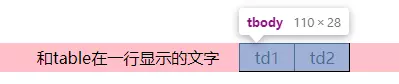
右侧的 table 和左侧的文字在一行排列（外在盒子 inline 的表现特征），同时有拥有自定义宽度 111px（内在盒子 table 可以设置宽高）。
# 1.5 css 权重和超越!important
参考css 选择器
# 1.6 盒模型（盒尺寸）
元素的内在盒子是由margin box、border box、padding box、content box组成的，这四个盒子由外到内构成了盒模型。
IE 模型：box-sizing:border-box此模式下，元素的宽度计算为border+padding+content的宽度总和。
W3C 标准模型：box-sizing:content-box此模式下，元素的宽度计算为content的宽度。
由于content-box在计算宽度的时候不包含broder padding很烦人，而且又是默认值，业内一般采用以下代码重置样式：
:root {
box-sizing: border-box;
}
* {
box-sizing: inherit;
}
2
3
4
5
6
7
# 1.7 内联盒模型
内联元素是指外在盒子是内联盒子的元素。从表现来说，内联元素的典型特征就是可以和文字在一行显示。文字也是内联元素。图片、按钮、输入框、下拉框等替换元素也是内联元素。内联盒模型是指内联元素包含的几个盒子，理解记忆下面的几个概念对 css 的深入学习极其重要。
- 内容区域：本质上就是字符盒子。在浏览器中，文字选中状态的背景色就是内容区域。
- 内联盒子：内联盒子就是指元素的外在盒子是内联的，会和其他内联盒子排成一行。
- 行框盒子：由内联元素组成的每一行都是一个行框盒子。如果一行里面没有内联元素如一个空的
div标签，则不会形成行框盒子。行框盒子由一个个内联盒子组成，如果换行，那就是两个行框盒子。比如一个包含了很多字符的换行的的p标签，每一行都存在一个行框盒子。值得注意的是，如果给元素设置display: inline-block，则创建了一个独立的行框盒子。line-height是作用在行框盒子上的，并最终决定高度。 - 包含盒子：就是包含块。多行文字组成一个包含块，一个包含块有若干个行框盒子。
- 幽灵空白节点：内联元素的每个行框盒子前面有一个“空白节点”，这个“空白节点”不占据任何宽度，无法选中获取，但是又实实在在存在，表现就如同文本节点一样（本文中大量例子会用字母 x 模拟幽灵空白节点）。
# 1.8 替换元素
替换元素是指内容可以替换的元素，实际上就是content box可以被替换的元素。如存在src=""属性的<img><audio><iframe>元素和可以输入文本的<input><select><textarea>元素等。
所有替换元素都是内联元素，默认display属性是inline或inline-block(除了input[type="hidden"]默认display:none;)。
替换元素有自己默认的样式、尺寸（根据浏览器不同而不同），而且其vertical-align属性默认是bottom（非替换元素默认值是baseline）。
# 1.9 css 的继承机制
参见CSS 简单继承
# 二、盒模型四大金刚
参见CSS 简单继承
# 三、好基友line-height和vertical-align
- 字母 x 的角色
- line-height
- vertical-align
# 3.1 字母 x 的角色
在内联元素的垂直方向对齐中，基线是最为重要的概念。line-height定义的就是两基线之间的距离，vertical-align的默认值就是基线。基线定义是字母 x 的下边缘。
css 中有个概念叫x-height，指的是小写字母 x 的高度。vertical-align:middle对齐的就是基线往上 1/2x-height高度的地方，可以理解为近似字母 x 的交叉点。
css 中除了px/em/rem等，还有个单位是ex。指的就是小写字母 x 的高度，即x-height。
# 3.2 line-height
属性值：
normal：默认值normal其实是类型为数值的变量，根据浏览器和字体font-family不同而不同，一般约为 1.2。- 数值和百分比：最终会被计算为带单位的值，具体计算方法就是乘以字体大小
font-size。 - 长度值：就是
100px这样带单位的值。
这几类值的继承特性不同：line-height是数值的元素的子元素继承的就是这个数值，百分比/长度值继承的都是计算后得出的带单位的值（px）。
line-height的作用
line-height属性用于设置多行元素的空间量，如多行文本的间距。
对块级元素来说，line-height决定了行框盒子的最小高度。注意是行框盒子的最小高度，而不是块级元素的实际高度。（图中两个 div 行高一样，div.one 的背景色区域就是行框盒子的高度，而 div.two 的背景区域则是实际高度，其行框盒子高度和 div.one 是一样的。）
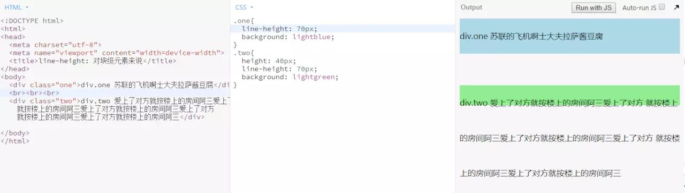
对于非替代的 inline 元素，它用于计算行框盒子的高度。此时内联元素的行框盒子的高度完全由line-height决定，不受其他任何属性的影响。

line-height实现垂直居中的本质：行距
行距是指一行文本和相邻文本之间的距离。行距=line-height-font-size。行距具有上下等分的机制：意思就是文字上下的行距是一样的，各占一半，这也是line-height能让内联元素垂直剧中的原因。下图中字线 x 上下行距各占一半，共同撑起了div。
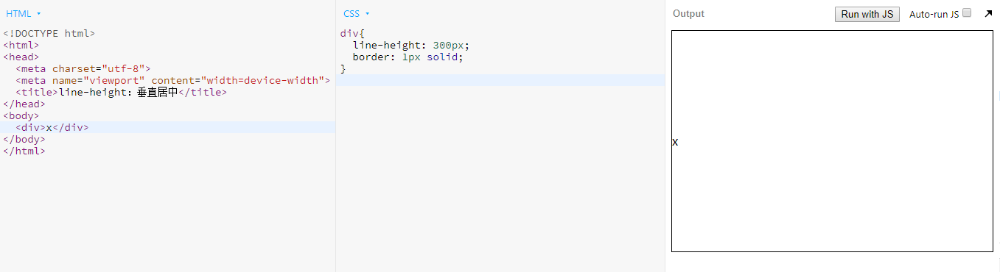
下图中和上图唯一不同之处就是多了个 display: inline-block 的 span 元素，但是此处的 span 元素并没有影响 div 元素的高度，而只是靠着 vertical-align: middle 属性将自身中心点对齐了字母 x 的交叉点实现垂直居中而已。div 元素的高度仍然和上图一模一样，由字母 x 和行距共同撑起。此时如果删除字母 x，div 的高度不变，因为 span 元素的行框盒子前会产生幽灵空白节点，而幽灵空白节点+行高也能撑起 div。
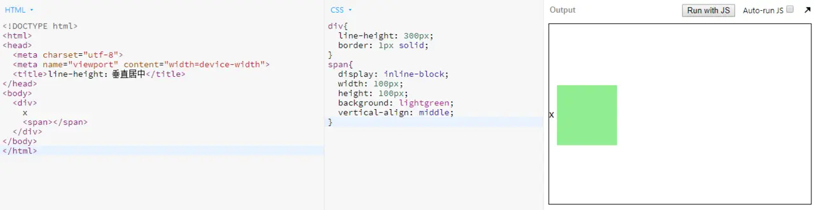
内联元素的大值特性
无论内联元素的line-height 如何设置，最终父元素的高度都是数值大的那个 line-height 决定的。
# 3.3 vertical-align
属性值：
- 线类：如
baseline(默认值)、top、middle、bottom（baseline使元素的基线与父元素的基线对齐，middle使元素的中部与父元素的基线往上x-height的一半对齐。top、bottom使元素及其后代元素的询问与整行或整块的底部对齐。） - 文本类：
text-toptext-bottom(使元素的顶部与父元素的字体顶部对齐。) - 上标下标：
sub、super（使元素的基线与父元素的下标基线对齐。） - 数值：
20px、2em（默认值basline相当于数值的 0。使元素的基线对齐到父元素的基线之上的给定长度，数值正值是基线往上偏移，负值是往下偏移，借此可以实现元素垂直方向精确对齐。） - 百分比：
20%（使元素的基线对齐到父元素的基线之上的给定百分比。该百分比是 line-height 属性的百分比。）
vertical-align的作用前提
vertical-align 属性起作用的前提必须是作用在内联元素上。 即display计算值为inline、inline-block、inline-table、table-cell的元素。所以如果元素设置了float:left或者position:absolute，则其vertical-align属性不能生效，因为此时元素的display计算值为block了。
- 好基友
line-height、vertical-align和第三者幽灵空白节点的爱恨情仇
有时候会遇到下面这样的高度和设置不一致的情况：
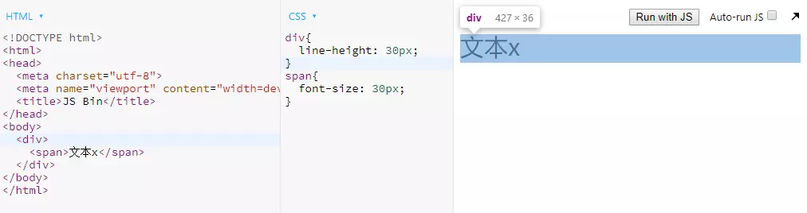
div的实际高度比设定的行高大了，为什么呢？
内联元素的默认对齐方式是baseline，所以此时span元素的基线和父元素的基线相对齐的，而此时父元素的基线在哪呢？
父元素的基线其实就是行框盒子前的幽灵空白节点的基线，把幽灵空白节点具象化为字母x可能容易理解些：
由于div行高是30px，所以字母x和span元素的高度都是30px。但是字母 x 的font-size较小，span元素的font-size较大，而行高一样的情况下font-size越大基线的位置越偏下，所以两者的基线不在同一水平线上。如下图左边部分：
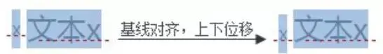
由于内联元素默认基线对齐，所以字母x和span元素发生了位移以使得基线对齐，导致div高度变大。而此时字母x的半行距比span元素的半行距大，大出的部分就是div的高度增加的部分。
display:inline-block基线不同之处
图中span元素设置了display:inline-block和宽高，从而撑起了父元素div的高度，但span本身并无margin属性，那为什么底部和 div 下边缘之间会有空隙呢？
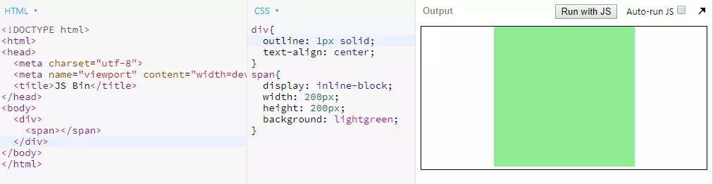
这就要说到 inline-block 的不同之处了。一个设置了display:inline-block的元素：
- 如果元素内部没有内联元素，则该元素基线就是该元素下边缘；
- 如果元素设置了
overflow为hidden auto scroll，则其基线就是该元素下边缘； - 如果元素内部还有一内联元素，则其基线就是内部最后一行内联元素的基线。
回到上面的例子：
原来是第三者幽灵空白节点搞的鬼。此时span的行框盒子前，还存在一个幽灵空白节点。由于span元素默认基线对齐，所以span元素的基线也就是其下边缘是和幽灵空白节点的基线对齐的。从而导致幽灵空白节点基线下面的半行距撑高了div元素，造成空隙。如下图：
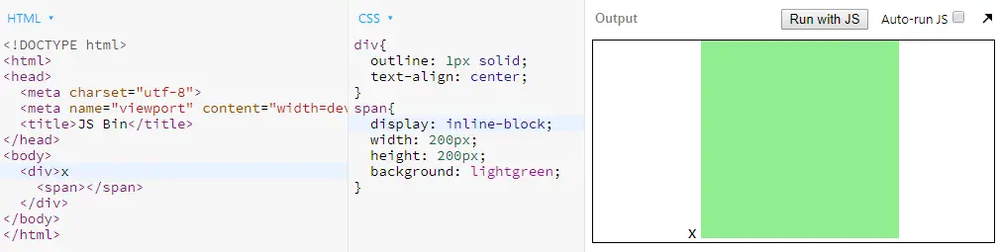
如果 span 元素中存在内联元素呢？
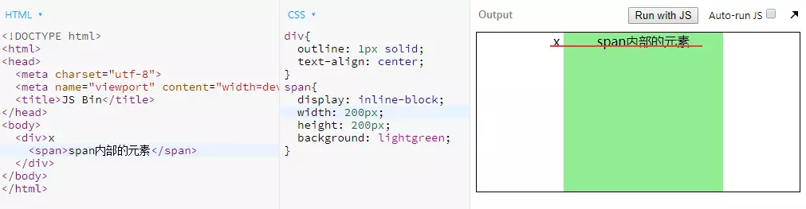
可以看到，此时 span 元素下边缘的空隙没了，因为此时 span 元素的基线是内部最后一行内联元素的基线。
值得一提的是，由于替换元素内部不可能再有别的元素，所以其基线位置永远位于下边缘。
- 解决问题
间隙产生本质上是由基线对齐引发的错位造成的，源头上是vertical-align和line-height共同造成的，所以要想解决这个问题，只要直接或间接改造两个属性中的一个就行了：
- 给元素设置块状化
display:block使vertical-align属性失败； - 尝试不同的
vertical-align值如bottom/middle/top; - 直接修改
line-height值； - 如果
line-height为相对值如1.4，设置font-size:0间接改变line-height。
- 弹框 dialog
下面是张鑫旭大佬推荐的利用 vertical-align 实现的水平垂直居中弹框，能够理解的话就说明你已经完全掌握了好基友和第三者的关系了。
<div class="container">
<div class="dialog">自适应弹出层</div>
</div>
<style>
.container{
position: fixed;
top: 0; right: 0; bottom: 0; left: 0;
background-color: rgba(0, 0, 0, .15);
text-align: center;
font-size: 0;
white-space: nowrap;
overflow: auto;
}
.container:after{
content: '';
display: inline-block;
height: 100%;
vertical-align: middle;
}
.dialog{
display: inline-block;
width: 400px;
height: 400px;
vertical-align: middle;
text-align: left;
font-size: 14px;
white-space: normal;
background: white;
}
</style>
2
3
4
5
6
7
8
9
10
11
12
13
14
15
16
17
18
19
20
21
22
23
24
25
26
27
28
29
30
31
# 四、流的破坏
现在 UI 框架横行的年代，我们的 css 写的越来越少了。这对于很多老鸟来说是件好事，但是对于初入前端的小白却未必。因为写的少了，就少了很多练手和总结的机会，对于很多样式理解就不透彻。本章介绍的float、position 和 BFC 对于前端页面布局非常重要，希望诸位看官们静下心来仔细研读
# 4.1 float属性的特性
float属性应该是 css 世界最令人意外的属性了，倒不是因为他的表现，而是他的设计初衷竟然只是为了实现“文字环绕图片”的效果。只不过因为float属性的一些特性，才导致其被到处使用以致于产生了诸多不利于维护的页面。下面看看float属性的特性：
- 包裹性：即此时元素
width会像height一样由子元素决定，而不是默认撑满父元素。 - 块状化并格式化上下文：这就是 BFC 特性。块状是指元素设置
float:left之后，其display的计算值就成了block。格式化上下文是指会创建一个 BFC。 - 没有任何
margin合并； - 脱离文档流：
float设计的初衷就是为了“文字环绕”效果，为了让文字环绕图片，就需要具备两个条件。第一是元素高度坍塌，第二是选框盒子不可与浮动元素重叠。而元素高度坍塌就是导致元素后面的非浮动块元素会和其重叠，于是他就像脱离文档流了。
前三个特性都是正能量满满，但是最后一个特性却给我们开发者带来了很多麻烦，需要用到 clear 来清除浮动。
# 4.2 clear 的作用和不足
大家都知道clear:boath可以清除前面浮动元素的浮动，但实际上，他并不是真的清除了浮动。
clear的定义是：元素盒子的边不能与前面的浮动元素相邻。也就是虽然浮动元素高度坍塌，但是设置了clear:both的元素却将其高度视为仍然占据位置。
clear只能作用于块级元素，并且其并不能解决后面元素可能发生的文字环绕问题。
# 4.3 BFC 块级格式化上下文
参考BFC 原理
# 4.4 绝对定位position: absolute
和浮动元素一样，绝对定位也是具有块状化、BFC、包裹性、脱离文档流、没有margin合并的特性。
但和浮动不同的是，绝对定位是完全的脱离文档流。大家还刻浮动产生的目的就是为了实现文字环绕效果，所以浮动元素虽然脱离了文档流，但是后面的文字还是会环绕在浮动元素周围。而绝对定位一但产生，就不会再对周围元素产生任何影响。
而且两者包含块不同，浮动元素包含只能是父级元素，绝对定位的包含块则是距离最近的position不为static的祖先元素。
- 无依赖绝对定位
大多数乃至绝对定位的时候，都是存在包含块和left/top等方向属性的。但其实position:absolute是非常独立的 css 属性，其样式和行为表现不依赖任何 css 属性就可以完成。
无依赖的 position: absolute 元素定位的位置和其本身无定位属性时候的位置和 display 的值有关。如果元素在没有 position 的情况下是内联元素，则和内联元素在同一行显示；如果元素在没有 position 属性的情况下是块级元素，则换行显示。
- 绝对定位和
overflow:hidden
其实一句话就是可以表示两者之间的关系：当overflow:hidden元素在绝对定位元素和其包含块之间的时候，绝对定位元素不会被剪裁。
以下两种绝对定位元素不会被剪裁:
<div style="overflow: hidden;">
<img src="big.jpg" style="position: absolute;">
</div>
<div style="position: relative;">
<div style="overflow: hidden;">
<img src="big.jpg" style="position: absolute;">
</div>
</div>
2
3
4
5
6
7
8
以下两种绝对定位元素会被剪裁：
<div style="overflow: hidden; position: relative;">
<img src="big.jpg" style="position: absolute;">
</div>
<div style="overflow: hidden;">
<div style="position: relative;">
<img src="big.jpg" style="position: absolute;">
</div>
</div>
2
3
4
5
6
7
8
postion:absolute的流体特性
当绝对定位元素的水平方向(left/right)或垂直方向(top/bottom)的两个定位属性同时存在的时候，绝对元素在该方向上便具有了流体特性。此时的 width/height 属性具有自动撑满的特性，和一个正常流的 div 元素的 width 属性别无二致。如图，设置了固定 margin 值的元素，宽高 auto 能够自动适应剩余空间：
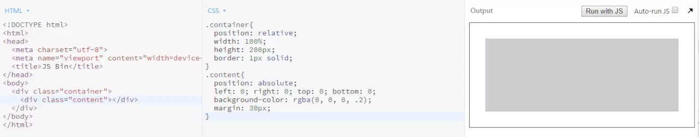
同样的，设置了固定宽高的元素，如果 margin: auto，则 margin 平分剩余空间导致垂直水平居中：
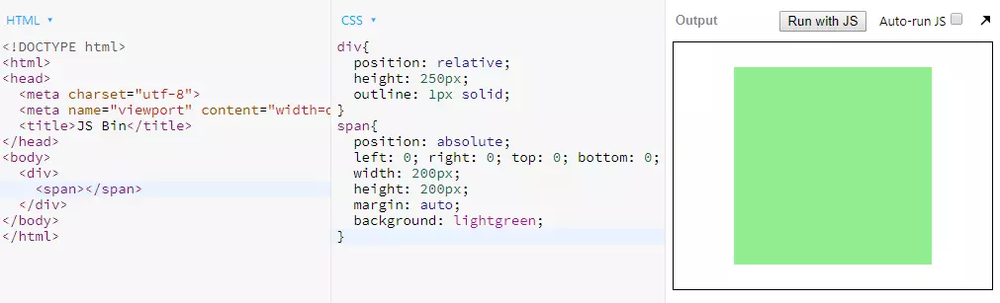
# 4.5 固定定位 position: fixed
position:fixed是相对于屏幕视口的位置来指定元素位置，祖先元素设置position:relative并不会对其产生影响。
position:fixed只有一个要注意的点，那就是当元素祖先的transform属性非none时，容器由视口改为该祖先，代码如下：
body {
border: 1px dashed;
}
main {
height: 200px;
margin: 50px;
border: 1px solid;
transform: scale(1);
}
div {
position: fixed;
left: 0;
bottom: 0;
width: 100px;
height: 100px;
background: cyan;
}
<main>main
<div>div</div>
</main>
2
3
4
5
6
7
8
9
10
11
12
13
14
15
16
17
18
19
20
21
22
23
效果如下：
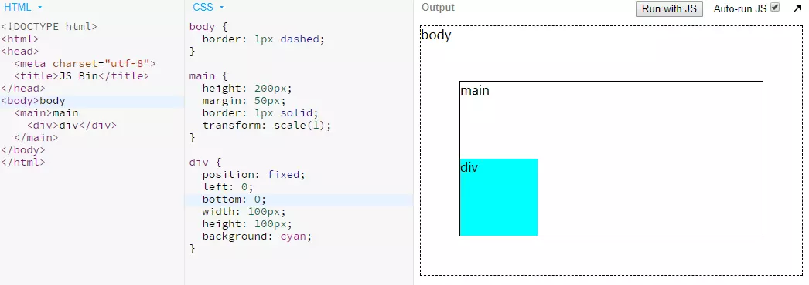
# 4.6 粘性定位position: sticky
#one{position:sticky;top:10px;}
在 viewport 视口滚动到元素 top 距离小于 10px 之前，元素为相对定位。之后，元素将固定在与顶部距离 10px 的位置，直到 viewport 视口回滚到阈值以下。
需注意当position:sticky的父元素的overflow属性设置了默认值visible以外的值时，position:sticky将失效。
position: sticky 除了不兼容 ie 浏览器，其他还好。
# 五、层叠规则
参考：结构与层叠
# 六、文本控制
参考：字体控制
# 七、元素的显示与隐藏
元素的显示隐藏方法很多，不同方法的在不同的场景下页面效果不一，对页面的性能也有不同的影响。
# 7.1 元素隐藏方法总结
- 如果希望元素不可见、不占据空间、资源会加载、DOM 可访问：
display:none; - 如果希望元素不可见、不能点击、但占据空间、资源会加载，可以使用：
visibility:hidden; - 如果希望元素不可见、不占据空间、显隐时可以又 transition 淡入淡出效果
div{
position: absolute;
visibility: hidden;
opacity: 0;
transition: opacity .5s linear;
background: cyan;
}
div.active{
visibility: visible;
opacity: 1;
}
2
3
4
5
6
7
8
9
10
11
这里使用visibility: hidden而不是display: none，是因为display: none会影响 css3 的transition过渡效果。 但是display: none并不会影响 cssanimation动画的效果。
- 如果希望元素不可见、可以点击、占据空间，可以使用：
opacity:0; - 如果希望元素不可见、可以点击、不占据空间，可以使用：
opacity: 0; position: absolute;; - 如果希望元素不可见、不能点击、占据空间，可以使用：
position: relative; z-index: -1;； - 如果希望元素不可见、不能点击、不占据空间，可以使用：
position: absolute ; z-index: -1;；
# 7.2 display: none 与 visibility: hidden 的区别
display:none的元素不占据任何空间，visibility:hidden的元素空间保留；display:none会影响 css3 的transition过渡效果，visibility:hidden不会；display: none隐藏产生重绘 ( repaint ) 和回流 ( relfow )，visibility: hidden只会触发重绘；- 株连性：
display: none的节点和子孙节点元素全都不可见，visibility: hidden的节点的子孙节点元素可以设置visibility: visible显示。visibility: hidden属性值具有继承性，所以子孙元素默认继承了hidden而隐藏，但是当子孙元素重置为visibility: visible就不会被隐藏。
# 八、弹性布局
弹性布局是指 display: flex 或 display: inline-flex 的布局。注意，设为弹性布局以后，子元素的 float、clear、vertical-align 属性都会失效。
参考：flex 学习
# 九、网格布局
参考：grid 布局
# 参考资料
# 联系作者
平凡世界，贵在坚持。

理解盒模型 →